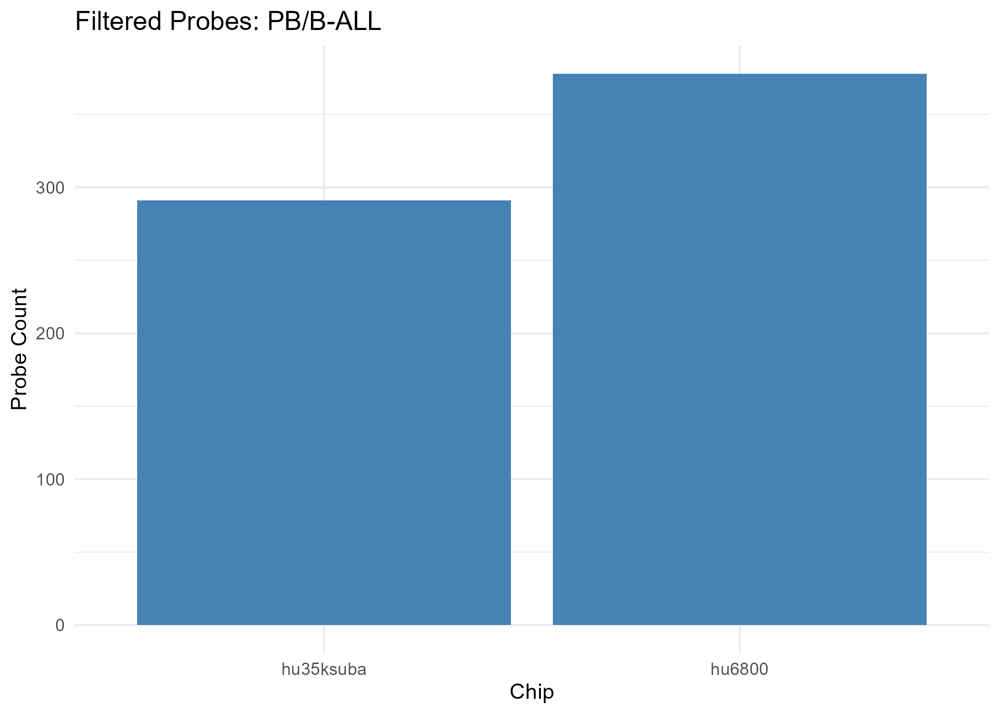
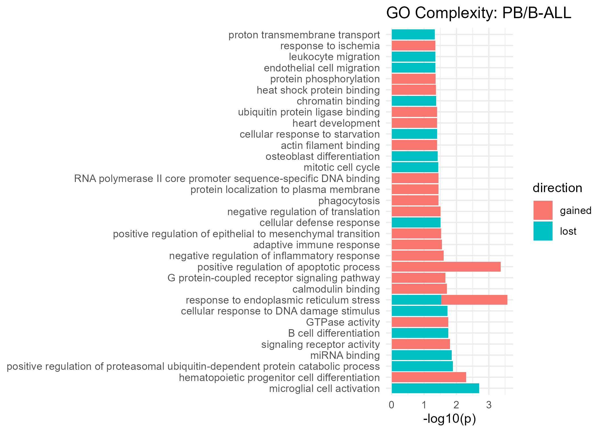
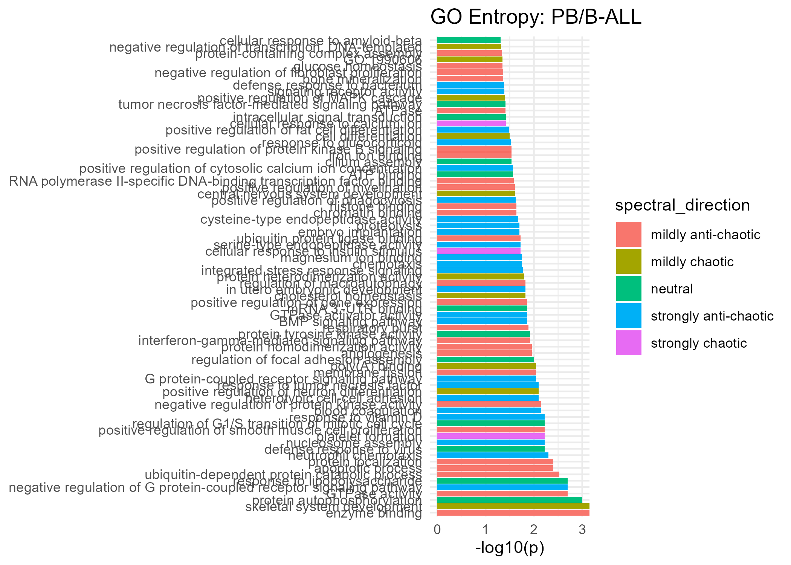
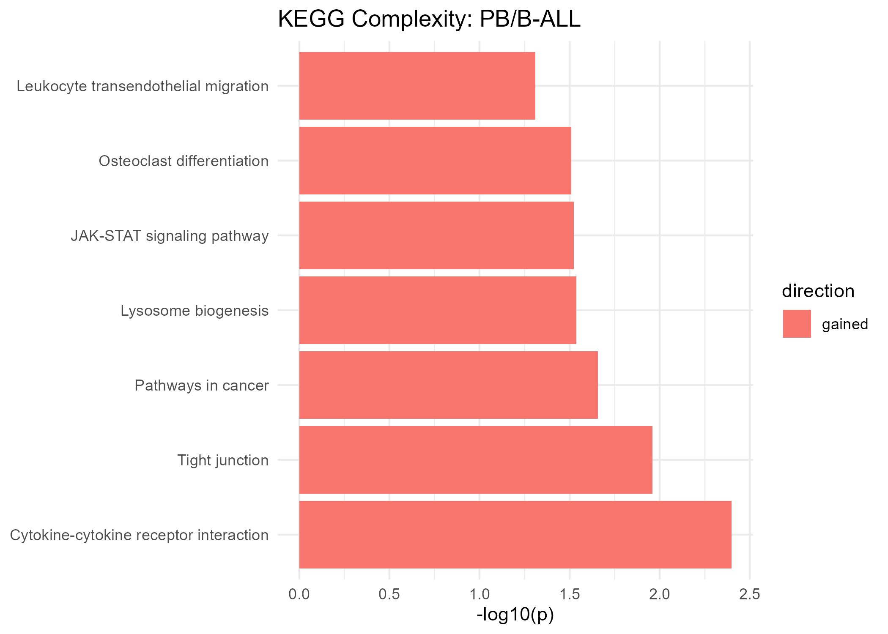
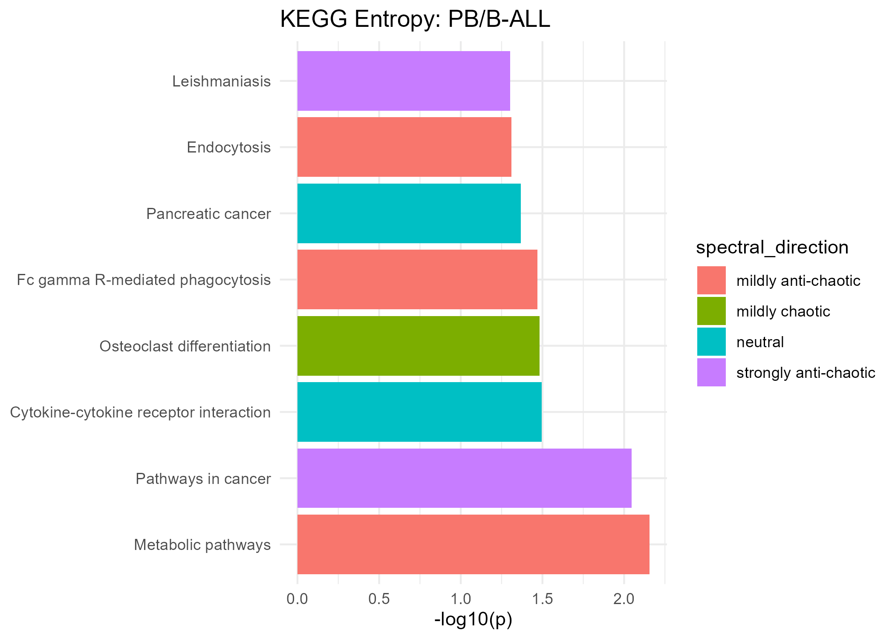

26 Comparison Report: PB/B-ALL
- Cancer Category: leukemias
- Chip hu35ksuba: 1353 filtered probes
- Chip hu6800: 1449 filtered probes
Overall Complexity & Entropy Assessment
| Measure | All Filtered Probes | GO MF Terms | KEGG Pathways | HALLMARK Genes |
|---|---|---|---|---|
| Complexity | strong gain (uncertain) | () | strong gain (moderately supported) | strong loss (uncertain) |
| Shannon Entropy | no clear change (uncertain) | () | strongly chaotic (well supported) | strongly chaotic (uncertain) |
| Spectral Entropy | no clear change (uncertain) | () | strongly anti-chaotic (well supported) | strongly anti-chaotic (uncertain) |
Note
Interpretation Guide
- Gain = Increased complexity from normal to tumor
- Loss = Complexity reduction from normal to tumor
- Chaotic = Increased entropy from normal to tumor
- Anti-Chaotic = Entropy reduction from normal to tumor
- P-values = All p-values unadjusted unless noted
Gain Complexity Clusters
| Cluster | # Terms | p-value | Representative Terms |
|---|---|---|---|
| 84 | 3 | 0.004 | positive regulation of apoptotic process; regulation of apoptotic process; positive regulation of apoptotic process |
| 137 | 1 | 0.005 | hematopoietic progenitor cell differentiation |
| 32 | 5 | 0.006 | cellular response to DNA damage stimulus; response to endoplasmic reticulum stress; integrated stress response signaling |
| 201 | 1 | 0.025 | negative regulation of inflammatory response |
| 12 | 4 | 0.031 | adaptive immune response; immune response; adaptive immune response |
| 142 | 1 | 0.036 | phagocytosis |
| 139 | 1 | 0.045 | response to ischemia |
| 20 | 4 | 0.047 | translational initiation; cytoplasmic translation; translation |
| 53 | 2 | 0.055 | regulation of epithelial to mesenchymal transition; positive regulation of epithelial to mesenchymal transition |
| 112 | 2 | 0.066 | cellular response to lipopolysaccharide; cellular response to lipopolysaccharide |
| 3 | 8 | 0.089 | MAPK cascade; signal transduction; G protein-coupled receptor signaling pathway |
| 66 | 2 | 0.093 | BMP signaling pathway; transforming growth factor beta receptor signaling pathway |
| 204 | 2 | 0.123 | interferon-gamma-mediated signaling pathway; cellular response to interferon-gamma |
| 176 | 2 | 0.138 | positive regulation of superoxide anion generation; positive regulation of reactive oxygen species metabolic process |
| 51 | 2 | 0.139 | negative regulation of gene expression; negative regulation of gene expression |
| 82 | 4 | 0.139 | defense response to bacterium; defense response to bacterium; defense response to Gram-negative bacterium |
| 55 | 3 | 0.182 | cell migration; cell migration; leukocyte migration |
| 99 | 3 | 0.182 | positive regulation of smooth muscle cell proliferation; positive regulation of vascular associated smooth muscle cell proliferation; positive regulation of smooth muscle cell proliferation |
| 24 | 3 | 0.189 | proteolysis; proteolysis; protein processing |
| 36 | 4 | 0.195 | integrin-mediated signaling pathway; cell surface receptor signaling pathway; transmembrane receptor protein tyrosine kinase signaling pathway |
| 90 | 3 | 0.206 | innate immune response; response to interferon-gamma; innate immune response |
| 103 | 2 | 0.209 | cell division; cell division |
| 33 | 3 | 0.216 | vacuolar acidification; vacuolar acidification; lysosomal lumen acidification |
| 106 | 2 | 0.225 | regulation of cell cycle; regulation of cell cycle |
| 59 | 3 | 0.239 | cytokine-mediated signaling pathway; cytokine-mediated signaling pathway; tumor necrosis factor-mediated signaling pathway |
| 58 | 3 | 0.267 | negative regulation of translation; miRNA mediated inhibition of translation; negative regulation of translation |
| 30 | 2 | 0.304 | apoptotic process; apoptotic process |
| 35 | 3 | 0.312 | positive regulation of cytosolic calcium ion concentration; cellular calcium ion homeostasis; positive regulation of cytosolic calcium ion concentration |
| 61 | 3 | 0.342 | actin cytoskeleton organization; actin filament organization; actin cytoskeleton organization |
| 2 | 4 | 0.367 | negative regulation of transcription by RNA polymerase II; negative regulation of transcription, DNA-templated; negative regulation of transcription by RNA polymerase II |
| 56 | 4 | 0.388 | negative regulation of angiogenesis; positive regulation of angiogenesis; negative regulation of angiogenesis |
| 101 | 3 | 0.402 | B cell receptor signaling pathway; T cell receptor signaling pathway; B cell receptor signaling pathway |
| 144 | 2 | 0.427 | chemotaxis; positive chemotaxis |
| 43 | 3 | 0.430 | positive regulation of cell population proliferation; positive regulation of cell population proliferation; regulation of cell population proliferation |
| 95 | 3 | 0.430 | positive regulation of translation; regulation of translational initiation; positive regulation of translation |
| 44 | 3 | 0.478 | negative regulation of cell population proliferation; negative regulation of cell population proliferation; negative regulation of fibroblast proliferation |
| 34 | 3 | 0.496 | cell adhesion; cell adhesion; cell adhesion mediated by integrin |
| 105 | 2 | 0.508 | defense response to virus; defense response to virus |
| 100 | 3 | 0.532 | positive regulation of inflammatory response; regulation of inflammatory response; positive regulation of inflammatory response |
| 31 | 3 | 0.540 | inflammatory response; defense response; inflammatory response |
| 21 | 2 | 0.542 | protein folding; protein refolding |
| 10 | 4 | 0.601 | positive regulation of protein phosphorylation; positive regulation of protein phosphorylation; positive regulation of protein kinase activity |
| 17 | 6 | 0.626 | regulation of transcription, DNA-templated; regulation of transcription by RNA polymerase II; negative regulation of NF-kappaB transcription factor activity |
| 5 | 3 | 0.656 | mRNA splicing, via spliceosome; mRNA processing; mRNA splicing, via spliceosome |
| 102 | 2 | 0.661 | protein homooligomerization; protein homotetramerization |
| 72 | 4 | 0.676 | regulation of protein stability; protein stabilization; regulation of protein stability |
| 39 | 2 | 0.812 | axonogenesis; axonogenesis |
| 9 | 8 | 0.860 | positive regulation of cytokine production; positive regulation of interferon-gamma production; positive regulation of interleukin-10 production |
| 68 | 2 | 0.890 | neuron projection development; neuron development |
| 87 | 3 | 0.896 | negative regulation of I-kappaB kinase/NF-kappaB signaling; negative regulation of NIK/NF-kappaB signaling; negative regulation of I-kappaB kinase/NF-kappaB signaling |
| 19 | 3 | 0.982 | RNA processing; RNA splicing; RNA splicing |
| * Combined p-values are computed using Fisher’s method (sumlog) across the GO terms in each cluster. |
Loss Complexity Clusters
| Cluster | # Terms | p-value | Representative Terms |
|---|---|---|---|
| 134 | 1 | 0.002 | microglial cell activation |
| 73 | 1 | 0.013 | positive regulation of proteasomal ubiquitin-dependent protein catabolic process |
| 145 | 1 | 0.031 | cellular defense response |
| 130 | 1 | 0.037 | mitotic cell cycle |
| 132 | 1 | 0.038 | osteoblast differentiation |
| 191 | 1 | 0.045 | endothelial cell migration |
| 47 | 2 | 0.060 | cellular response to starvation; cellular response to glucose starvation |
| 45 | 3 | 0.068 | insulin receptor signaling pathway; cellular response to insulin stimulus; cellular response to insulin stimulus |
| 92 | 2 | 0.105 | positive regulation of fat cell differentiation; positive regulation of cell differentiation |
| 86 | 4 | 0.192 | positive regulation of I-kappaB kinase/NF-kappaB signaling; positive regulation of protein kinase B signaling; positive regulation of I-kappaB kinase/NF-kappaB signaling |
| 8 | 2 | 0.264 | in utero embryonic development; in utero embryonic development |
| 62 | 3 | 0.330 | cell differentiation; fat cell differentiation; cell differentiation |
| 88 | 3 | 0.343 | negative regulation of MAPK cascade; negative regulation of ERK1 and ERK2 cascade; negative regulation of ERK1 and ERK2 cascade |
| 25 | 3 | 0.382 | ubiquitin-dependent protein catabolic process; proteasome-mediated ubiquitin-dependent protein catabolic process; proteolysis involved in cellular protein catabolic process |
| 4 | 2 | 0.420 | regulation of alternative mRNA splicing, via spliceosome; regulation of mRNA splicing, via spliceosome |
| 16 | 2 | 0.422 | chromatin remodeling; chromatin remodeling |
| 64 | 3 | 0.517 | regulation of cell migration; positive regulation of cell migration; positive regulation of cell migration |
| 96 | 5 | 0.557 | positive regulation of transcription, DNA-templated; positive regulation of transcription by RNA polymerase II; positive regulation of transcription, DNA-templated |
| 42 | 2 | 0.628 | protein localization; protein localization |
| 115 | 2 | 0.819 | cellular response to ionizing radiation; cellular response to gamma radiation |
| 75 | 2 | 0.835 | response to lipopolysaccharide; response to lipopolysaccharide |
| 28 | 4 | 0.931 | endocytosis; vesicle-mediated transport; receptor-mediated endocytosis |
| 120 | 2 | 0.962 | cellular oxidant detoxification; cellular oxidant detoxification |
| 38 | 3 | 0.994 | nervous system development; central nervous system development; nervous system development |
| * Combined p-values are computed using Fisher’s method (sumlog) across the GO terms in each cluster. |
Mixed Complexity Clusters
| Cluster | # Terms | p-value | Representative Terms |
|---|---|---|---|
| 63 | 2 | 0.030 | B cell differentiation; B cell differentiation |
| 116 | 2 | 0.047 | protein localization to plasma membrane; protein localization to plasma membrane |
| * Combined p-values are computed using Fisher’s method (sumlog) across the GO terms in each cluster. |
⚠️ Table not available.
Significant GO Molecular Function Terms (Complexity)

Gained Complexity
| GeneSet | p-value |
|---|---|
| G protein-coupled receptor signaling pathway | 0.022 |
| GTPase activity | 0.018 |
| RNA polymerase II core promoter sequence-specific DNA binding | 0.036 |
| actin filament binding | 0.040 |
| adaptive immune response | 0.028 |
| calmodulin binding | 0.020 |
| heart development | 0.040 |
| heat shock protein binding | 0.043 |
| hematopoietic progenitor cell differentiation | 0.005 |
| negative regulation of inflammatory response | 0.025 |
| negative regulation of translation | 0.031 |
| phagocytosis | 0.036 |
| positive regulation of apoptotic process | 0.013 |
| positive regulation of apoptotic process | 0.033 |
| positive regulation of epithelial to mesenchymal transition | 0.030 |
| protein localization to plasma membrane | 0.036 |
| protein phosphorylation | 0.044 |
| response to endoplasmic reticulum stress | 0.009 |
| response to ischemia | 0.045 |
| signaling receptor activity | 0.016 |
| ubiquitin protein ligase binding | 0.040 |
Lost Complexity
| GeneSet | p-value |
|---|---|
| B cell differentiation | 0.018 |
| cellular defense response | 0.031 |
| cellular response to DNA damage stimulus | 0.019 |
| cellular response to starvation | 0.040 |
| chromatin binding | 0.042 |
| endothelial cell migration | 0.045 |
| leukocyte migration | 0.045 |
| miRNA binding | 0.014 |
| microglial cell activation | 0.002 |
| mitotic cell cycle | 0.037 |
| osteoblast differentiation | 0.038 |
| positive regulation of proteasomal ubiquitin-dependent protein catabolic process | 0.013 |
| proton transmembrane transport | 0.047 |
| response to endoplasmic reticulum stress | 0.030 |
Significant GO Molecular Function Terms (Spectral Entropy)

Strongly Anti-Chaotic
| GeneSet | p-value |
|---|---|
| BMP signaling pathway | 0.014 |
| G protein-coupled receptor signaling pathway | 0.009 |
| GTPase activator activity | 0.014 |
| blood coagulation | 0.007 |
| chemotaxis | 0.018 |
| cysteine-type endopeptidase activity | 0.021 |
| defense response to bacterium | 0.042 |
| embryo implantation | 0.020 |
| heterotypic cell-cell adhesion | 0.008 |
| in utero embryonic development | 0.015 |
| integrated stress response signaling | 0.017 |
| magnesium ion binding | 0.018 |
| negative regulation of G protein-coupled receptor signaling pathway | 0.002 |
| neutrophil chemotaxis | 0.005 |
| nucleosome assembly | 0.006 |
| positive regulation of cytosolic calcium ion concentration | 0.027 |
| positive regulation of fat cell differentiation | 0.033 |
| positive regulation of phagocytosis | 0.024 |
| proteolysis | 0.020 |
| response to glucocorticoid | 0.030 |
| response to tumor necrosis factor | 0.008 |
| response to vitamin D | 0.006 |
| serine-type endopeptidase activity | 0.019 |
| signaling receptor activity | 0.041 |
Mildly Anti-Chaotic
| GeneSet | p-value |
|---|---|
| ATPase | 0.039 |
| GTPase activity | 0.002 |
| RNA polymerase II-specific DNA-binding transcription factor binding | 0.026 |
| angiogenesis | 0.011 |
| apoptotic process | 0.004 |
| bone mineralization | 0.043 |
| chromatin binding | 0.023 |
| enzyme binding | 0.000 |
| glucose homeostasis | 0.045 |
| histone binding | 0.023 |
| interferon-gamma-mediated signaling pathway | 0.012 |
| iron ion binding | 0.029 |
| membrane fission | 0.009 |
| negative regulation of fibroblast proliferation | 0.043 |
| negative regulation of protein kinase activity | 0.007 |
| positive regulation of gene expression | 0.014 |
| positive regulation of myelination | 0.025 |
| positive regulation of protein kinase B signaling | 0.029 |
| positive regulation of smooth muscle cell proliferation | 0.006 |
| protein homodimerization activity | 0.011 |
| protein localization | 0.004 |
| protein-containing complex assembly | 0.046 |
| regulation of macroautophagy | 0.015 |
| respiratory burst | 0.013 |
| ubiquitin protein ligase binding | 0.019 |
| ubiquitin-dependent protein catabolic process | 0.003 |
Neutral
| GeneSet | p-value |
|---|---|
| ATP binding | 0.027 |
| cellular response to amyloid-beta | 0.049 |
| cilium assembly | 0.029 |
| defense response to virus | 0.006 |
| intracellular signal transduction | 0.038 |
| mRNA 3’-UTR binding | 0.014 |
| protein autophosphorylation | 0.001 |
| protein tyrosine kinase activity | 0.012 |
| regulation of G1/S transition of mitotic cell cycle | 0.006 |
| regulation of focal adhesion assembly | 0.010 |
| response to lipopolysaccharide | 0.002 |
| tumor necrosis factor-mediated signaling pathway | 0.039 |
Mildly Chaotic
| GeneSet | p-value |
|---|---|
| GO:1990606 | 0.045 |
| cell differentiation | 0.032 |
| central nervous system development | 0.025 |
| cholesterol homeostasis | 0.015 |
| negative regulation of transcription, DNA-templated | 0.048 |
| poly(A) binding | 0.009 |
| positive regulation of MAPK cascade | 0.040 |
| positive regulation of neuron differentiation | 0.008 |
| protein heterodimerization activity | 0.016 |
| skeletal system development | 0.000 |
Strongly Chaotic
| GeneSet | p-value |
|---|---|
| cellular response to calcium ion | 0.038 |
| cellular response to insulin stimulus | 0.019 |
| platelet formation | 0.006 |
Significant KEGG Pathways (Complexity)

Gained Complexity
| GeneSet | p-value | Cancer Pathway |
|---|---|---|
| Cytokine-cytokine receptor interaction | 0.004 | |
| JAK-STAT signaling pathway | 0.030 | |
| Leukocyte transendothelial migration | 0.049 | |
| Lysosome biogenesis | 0.029 | |
| Osteoclast differentiation | 0.031 | |
| Pancreatic cancer | 0.133 | ✅ |
| Pathways in cancer | 0.022 | ✅ |
| Pathways in cancer | 0.962 | ✅ |
| Small cell lung cancer | 0.761 | ✅ |
| Tight junction | 0.011 |
Lost Complexity
| GeneSet | p-value | Cancer Pathway |
|---|---|---|
| Prostate cancer | 0.398 | ✅ |
Significant KEGG Pathways (Spectral Entropy)

Strongly Anti-Chaotic
| GeneSet | p-value | Cancer Pathway |
|---|---|---|
| Leishmaniasis | 0.050 | |
| Pathways in cancer | 0.009 | ✅ |
| Pathways in cancer | 0.650 | ✅ |
| Small cell lung cancer | 0.146 | ✅ |
Mildly Anti-Chaotic
| GeneSet | p-value | Cancer Pathway |
|---|---|---|
| Endocytosis | 0.049 | |
| Fc gamma R-mediated phagocytosis | 0.034 | |
| Metabolic pathways | 0.007 | |
| Prostate cancer | 1.000 | ✅ |
Neutral
| GeneSet | p-value | Cancer Pathway |
|---|---|---|
| Cytokine-cytokine receptor interaction | 0.032 | |
| Pancreatic cancer | 0.043 | ✅ |
Mildly Chaotic
| GeneSet | p-value | Cancer Pathway |
|---|---|---|
| Osteoclast differentiation | 0.033 |
Significant HALLMARK Genes (Complexity)
Gained Complexity
| GeneSet | p-value |
|---|---|
| HALLMARK_APOPTOSIS | 0.024 |
| HALLMARK_MTORC1_SIGNALING | 0.045 |
Lost Complexity
| GeneSet | p-value |
|---|---|
| HALLMARK_MYC_TARGETS_V1 | 0.027 |
Significant HALLMARK Genes (Spectral Entropy)
Strongly Anti-Chaotic
| GeneSet | p-value |
|---|---|
| HALLMARK_APOPTOSIS | 0.019 |
Latent-space normal-versus-tumor summary
Latent-space metrics are computed from the VAE representation using samples derived from the hu35ksuba platform only. These quantities summarize within-class geometric structure and separation between normal and tumor states in the learned latent space.
⚠️ Latent-space results are not available for this comparison on the hu35ksuba platform.